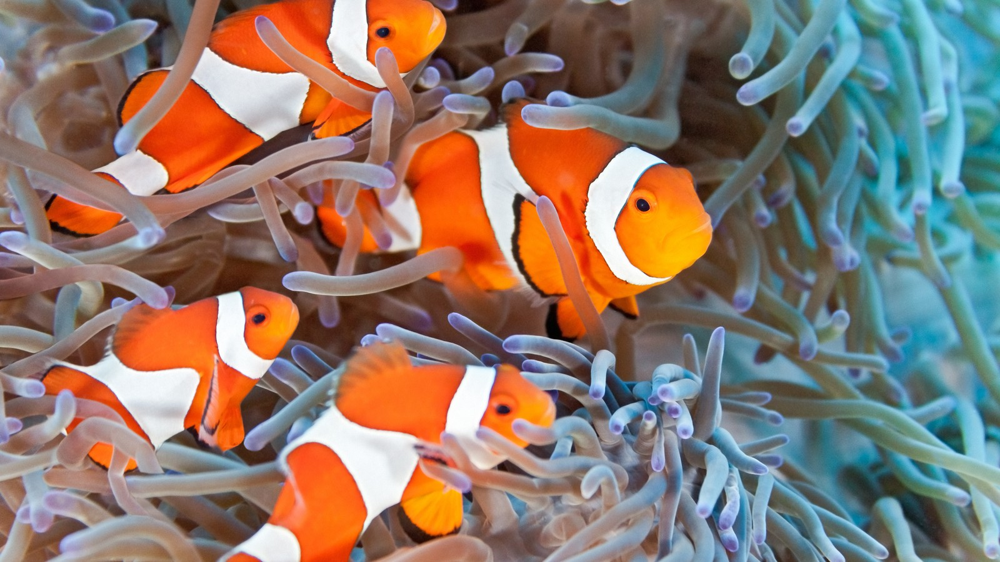
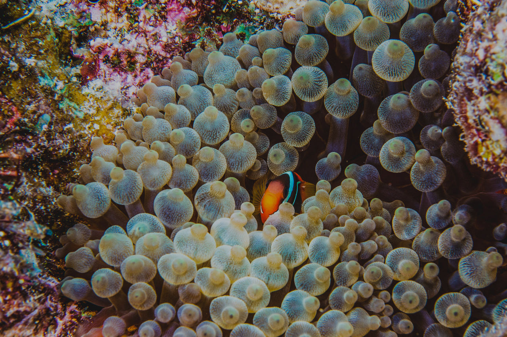

CLowfish
Small and colourful, these famous fishes have one of the most interesting symbiotic relationships.
Kingdom
Animalia
Phylum
Chordata
Class
Actinopterygii
Order
Perciformes
Family
Pomacentridae
Genus
Amphiprion
Description
The clownfish can be many different colours, depending on its species, including yellow, orange, red, and black. Most have white details. They are smaller fish, with the smallest around 7 to 8cm long and the longest 17cm long.
Habitat and Diet
lownfish are found in warm waters, such as the Red Sea and Pacific Oceans, in sheltered reefs or lagoons, living in anemone. Clownfish eat various small invertebrates and algae, as well as food scraps the anemone leaves behind.
Symbiotic Relationship
Clownfish survive in a mutually assistive symbiotic relationship with anemone. The anemone protect the clownfish from predators and provide food scraps. In return, the clownfish uses its bright colours to lure fish into the anemone, where they are killed by the anemone’s poison and eaten. The clownfish also fertilises the anemone with its faeces.
Clownfish facts
1.
Clownfish eggs can be hatched anytime during the year.2.
After the clownfish eggs are laid, the male clownfish guard them until they hatch.3.
Clownfish are all born males. Once they become female, they cannot be male again.4.
Though there are theories, it is not yet known how clownfish survive the anemone’s poison.5.
Male clownfish are the primary caretakers for their young, with females only helping on occasion.6.
Clownfish communicate by making popping and clicking noises.Behaviour and Reproduction
Clownfish are social fish, communicating through popping and clicking noises. They live in groups of male fish with one dominant female, a dominant male, and a group of smaller males. The dominant male ensures its position by taking the best food opportunities. If the female of the group dies, the dominant male fish will turn permanently female and the largest of the smaller males will become the next dominant male.
Female clownfish can lay thousands of eggs. After they are laid, the male will fertilise them. Any damaged or infertile eggs are typically eaten by the male.
Threats
Though clownfish are not highly threatened, their populations have decreased in some areas. This is because they make up 43% of the global marine ornamental trade, with 75% of these fish captured from the wild. This means, in exploited areas, there is reduced population density. It is important to maintain good practice and protect this unique fish.